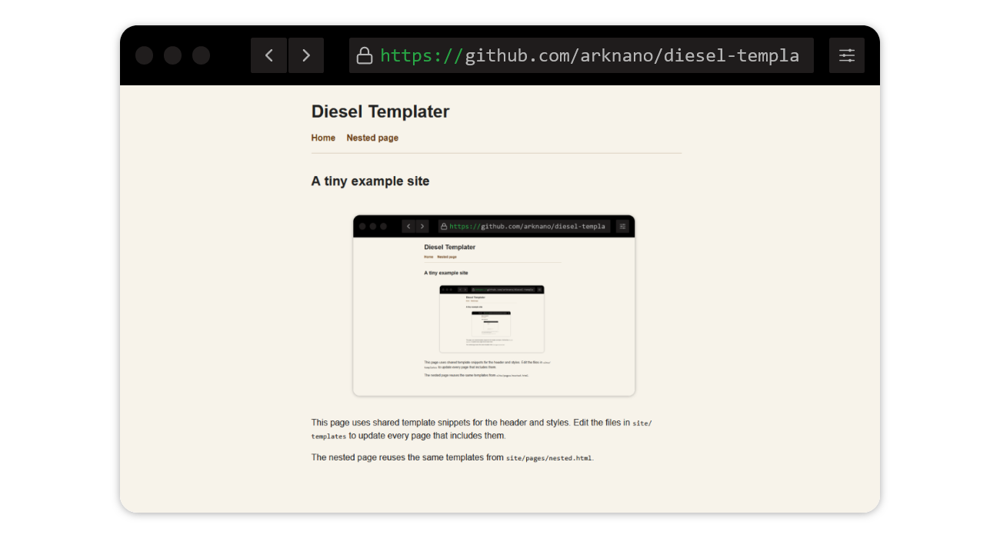

A tiny example site

This page uses shared template snippets for the header and styles.
Edit the files in site/templates to update every page that includes them.
The nested page reuses the same templates from site/pages/nested.html.